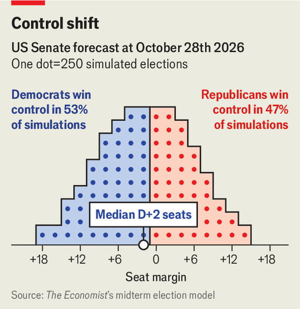
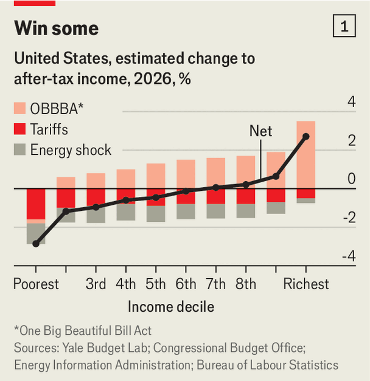
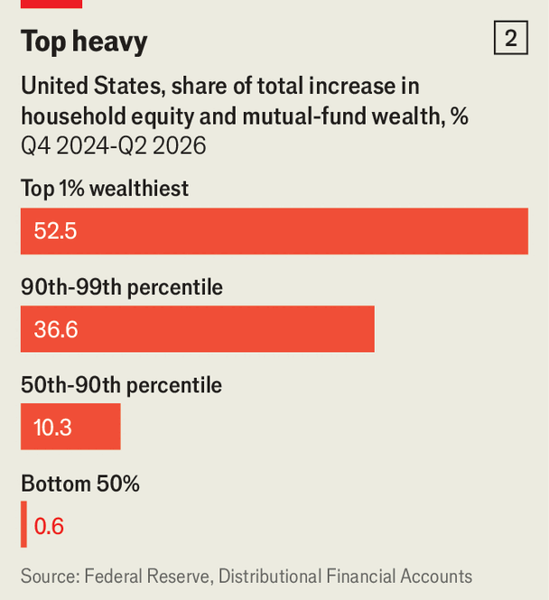

United States
Their competitive candidates in states such as Iowa show how the party can avoid approaching doom
America’s decisive voters are its most recent arrivals
Hispanic- and Asian-Americans will shape this year’s midterm elections and more


Their competitive candidates in states such as Iowa show how the party can avoid approaching doom
Our forecast of the midterms’ outcome

Their competitive candidates in states such as Iowa show how the party can avoid approaching doom
The midterms could reshape American politics far beyond Congress
Their competitive candidates in states such as Iowa show how the party can avoid approaching doom
The winners and losers of Trumponomics


Democrats may take control of several state governments